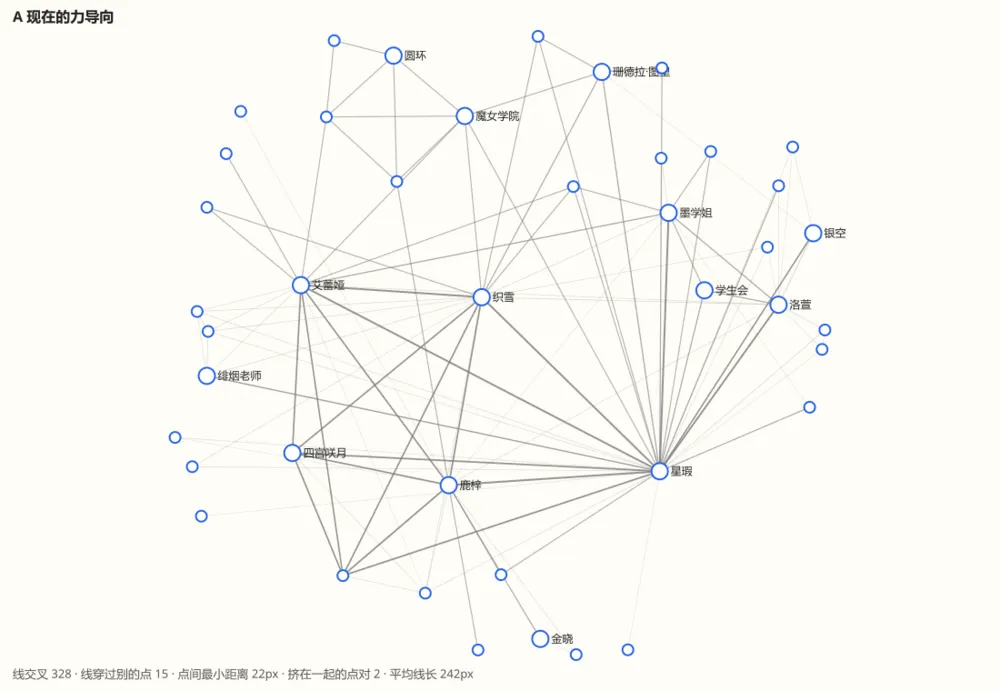
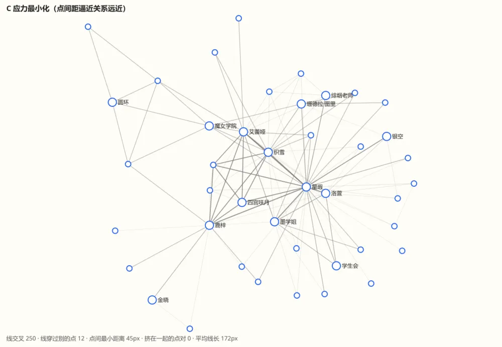
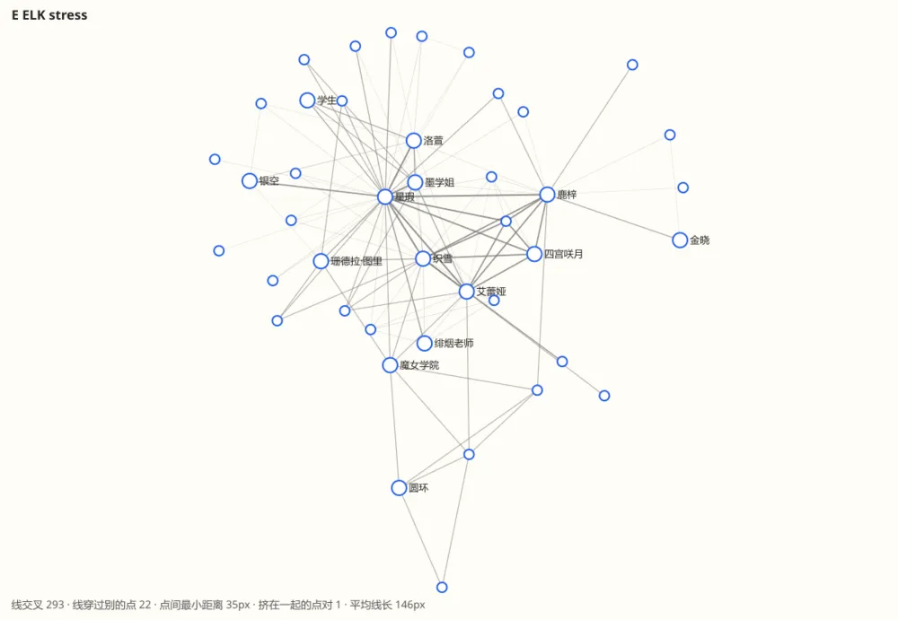
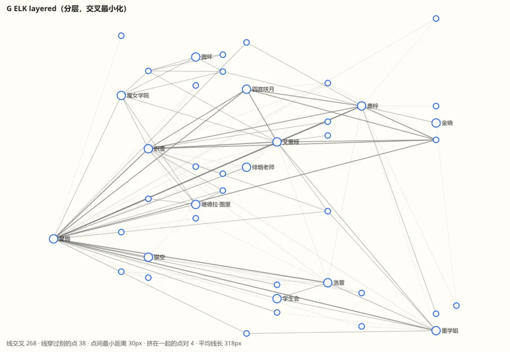
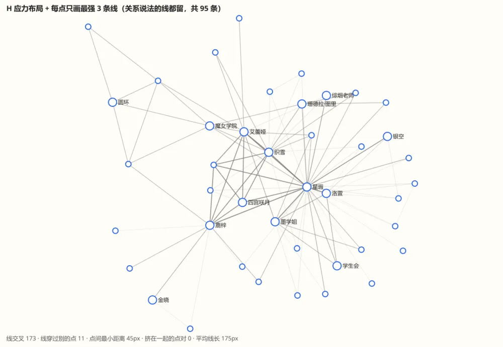

用你给的《老师，男生也能报考魔女学院吗？》第 164 章的关系图（默认视图：42 个点、108 条线，同场至少 2 次）在仓库外实测了几种布局，数了线交叉、线穿过别的点、点挤在一起的程度。下面的数字是真算出来的，不是估的；图上只给 14 个出场最多的点写名字。
| 布局 | 线交叉 | 线穿过别的点 | 点间最小距离 | 平均线长 |
|---|---|---|---|---|
| A 现在的力导向 | 328 | 15 | 22px | 242px |
| C 应力最小化 | 250 | 12 | 45px | 172px |
| E ELK stress（现成的库） | 293 | 22 | 35px | 146px |
| G ELK 分层 | 268 | 38 | 30px | 318px |
| D 环形 + 重心法排序 | 672 | 24 | 51px | 348px |
| 现在的同心（半径已放大） | 1187 | 18 | 47px | 277px |
| H 应力 + 每点只画最强 3 条线 | 173 | 11 | 45px | 175px |
结论先说：没有哪种布局能让这张图线不交叉——这张图本来就密，一个点连着十几条线。应力最小化（C）比现在的力导向少约 24% 的交叉、没有点挤在一起；再配合“少画次要的线”（H）能少到约 47%。

主要人物靠近中心，但星瑕一个点连出大量交叉线，下方有几对点贴得很近（最近 22px）。

线更短、更均匀，没有点挤在一起；代价是主要人物（星瑕）的一圈线会比较集中，同一个人的邻居分散在四周。这是图论里“尽量让线长都差不多”的标准做法，实现是纯 TypeScript、不加依赖（约 60 行）。
推荐：加为第四种排版“应力”，先不改默认；你用一阵觉得更好再换默认。
一步到位；但力导向对“只看周边”“逐步加点”等现有行为有调过的参数，换掉要重新验。


能力多（分层、树、边路由），但效果在这张图上没有比自己写的应力好（交叉 293 对 250，穿点 22 对 12）；要加一个 1.4MB 的依赖，在 Bun 下还要绕开它的 worker。
除了换布局，还可以少画线：每个点只画最强的 N 条（有关系说法的线都留），其余的线淡到几乎看不见或不画。

每点最强 3 条加全部关系线：108 条减到 95 条，交叉从 250 降到 173。这张图里 89 条是“关系说法”线，所以能减的不多；同场很多但没有关系说法的线才是被淡化的对象。开关关着时和现在一样。
图更干净，但“为什么这两个人之间没有线”会让人困惑。